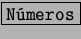

| Mes | Enero | Febrero | Marzo | Abril | Mayo |
| Sueldo | 145.000 | 145.000 | 145.000 | 145.000 | 145.000 |
| Vivienda | 30.000 | 31.000 | 30.000 | 29.000 | 32.000 |
| Comida | 40.000 | 43.000 | 46.000 | 39.000 | 41.000 |
| Coche | 15.000 | 6.000 | 16.000 | 8.000 | 9.000 |
| Agua | 7.000 | 8.000 | 6.000 | 4.000 | 9.000 |
| Luz | 11.000 | 10.000 | 12.000 | 9.000 | 10.500 |
| Varios | 10.000 | 18.000 | 11.000 | 8.000 | 11.000 |
El siguiente paso lógico es crear un libro nuevo con la StarCalc. Para eso nos iremos a [Archivo], [Nuevo], [Hoja de Cálculo]. Pondremos los títulos de los encabezados para cada una de las columnas, empezando en A1, insertaremos Descripción. Para los rótulos de las fechas introducimos la primera fecha y utilizaremos seleccionar y arrastrar para que StarCalc complete el resto de las cabeceras. Luego pondremos en la columna A todas las descripciones de los gastos e ingresos, y debajo de cada fecha las cantidades correspondientes. Para seguir con la claridad, insertaremos Gastos para tener todos los gastos agrupados e Ingresos para los ingresos. De esta manera desglosaremos los gastos e ingresos y sólo nos restaría añadir una línea para el cálculo del saldo.
Luego procedemos a retocar la estética para resaltar aquellos datos que nos interesen, tal como los Ingresos, los Gastos y el Saldo. En este punto cada cual puede poner su sello personal. Como guía, resaltaremos los rótulos en negrita y las cuentas de Ingresos, Gastos y Saldo con una letra mayor, negrita y usándo bordes.
Para el cálculo de los totales usaremos la función SUMA, para lo que elgiremos la columna correspondiente a enero y la fila que corresponde a Gastos e introduciremos =suma(. En este punto tendremos dos opciones: ingresar manualmente el rango de celdas o seleccinarlas con el ratón, en ambos casos hay que terminar cerrándo el paréntesis 5.10.
Para calcular el resto de meses, se procederá a copiar la fórmula anterior en el resto de celdas de la fila correspondientes a los siguientes meses5.11. La StarCalc corregirá la fórmula para que coincida con los datos de cada uno de los meses.
Hasta el momento tenemos los saldos de todas las cuentas de nuestro ejemplo. Pero queremos que nuestros datos nos faciliten una mayor cantidad de información. Podemos tener muchas cosas en mente, pero para esta primera práctica vamos a ver máximos, mínimos, promedios y porcentajes.
Comenzaremos con los máximos y mínimos. Nos situaremos en la barra de rótulos ingresaremos Máximo en N2, Mínimo en O2 yPromedio en P2, después de los meses. En la columna de Máximos utilizaremos la fórmula MÁX(), con la tilde incluida porque en otro caso no será reconocida. Para el mínimo utilizaremos MÍN(). La secuencia a ingresar sería: en N3 =máx(b3:m3) y en O3 mín(b3:m3. En el caso de los promedios, nos situaremos en P3 y teclearemos promedio( b3:m3). Luego sólo nos quedará copiar las tres celdas construidas, en cada una de las celdas correspondientes a las distintas cuentas.
La salida de los porcentajes se pueden hacer en una hoja distinta o en la misma
hoja. Nosotros lo haremos en la misma hoja, aunque lo que aquí se explique se
puede aplicar a otras hojas.
Primero hemos de construir los encabezados y las descripciones, esto es, los
meses y las cuentas. Para ello usaremos un truco que nos permitirá ahorrar
tiempo en el caso de que cambie alguno de los rótulos. Nos situaremos en A15
e introducimos =A2 y copiamos esta celda hasta M15 y luego repetimos
desde A3 hasta A25.
En la celda C165.12 introducimos =(c3-b3)/b3 y lo copiamos en el resto
de celdas. No se preocupe de la salida Err:503, se produce porque no
hay datos correspondientes a esos meses. Para que los datos sean en porcentaje
tenemos que dar formato a las celdas. Seleccionaremos tadas las celdas que
contengan número, incluso las que contengan errores, y accederemos a
[Formato], [Celda] y presionaremos las pestaña  si no
se encuentra activada, seleccionaremos Porcentaje en Categoría.
Presionaremos  y tendremos la salida con porcentajes.
y tendremos la salida con porcentajes.
De esta manera hemos obtenido las variaciones porcentuales. Pero, ¿no sería
interesante ver el porcentaje del total que significa cada cuenta?
Repetimos el paso anterior para copiar las etiquetas correspondientes a los
meses y a las cuentas, empezando en A28. Y añadimos en B30 =
b3/b$9, esta fórmula sólo se copiará hasta la cuenta Gastos, que tendrá una
salida del 100%. En B35 introducimos =b10/b$11 y lo copiamos en
todas las cuentas de Ingresos. Luego seleccionamos la columna de enero y la
pegamos en el resto de meses. De esta manera obtenemos el peso de cada una
de las cuentas en los distintos meses.
Por último, sólo nos queda añadir a las tablas efectos de resalte para destacar aquellos datos que nos interese tener mejor visualizados. También puede añadirse a la práctica una tabla de datos en la que se muestren los datos acumulados 5.13 de mes a mes y, de esta manera, llevar un control de los gastos e ingresos que llevamos para todo el año.